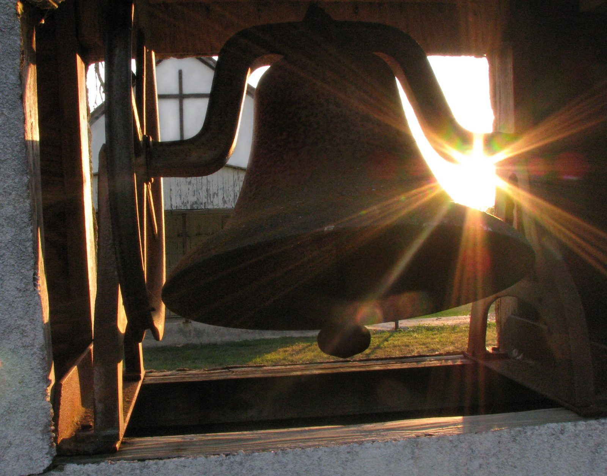

Bells
Estimate a bell’s weight from the diameter at its mouth. Weight grows with the cube of the diameter.
Estimate
14 cwt 0 qr 13 lb
- Kilograms
- 717 kg
- Pounds
- 1 581 lb
- Note, roughly
- F · nominal near 698 Hz
Estimate only. Real bells vary with profile and tuning.
Harnscombe
| Bell | Note | cwt–qr–lb | Diameter, medium profile |
|---|---|---|---|
| 1 | F | 4–2–18 | 75.1 cm |
| 2 | E | 5–0–12 | 77.4 cm |
| 3 | D | 6–0–17 | 82.3 cm |
| 4 | C | 7–1–16 | 87.5 cm |
| 5 | B♭ | 8–3–17 | 93.1 cm |
| 6 | A | 9–3–1 | 96.0 cm |
| 7 | G | 11–2–27 | 102.1 cm |
| 8 | F | 14–0–14 | 108.6 cm |
Diameter worked back from each bell’s weight with the same formula. Each figure opens the estimator.
